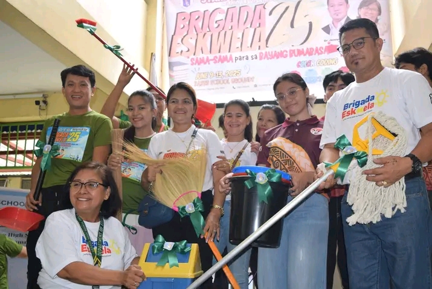
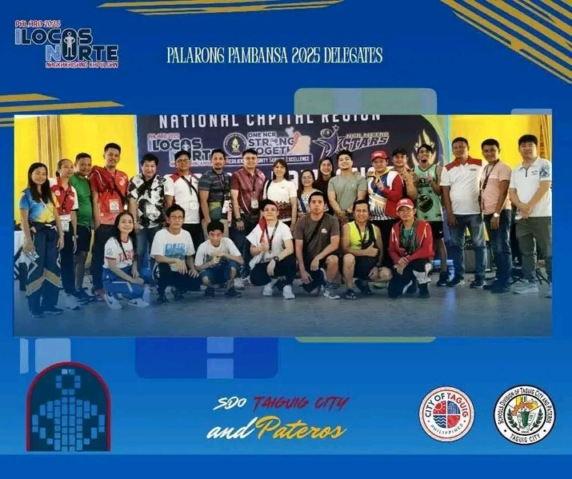
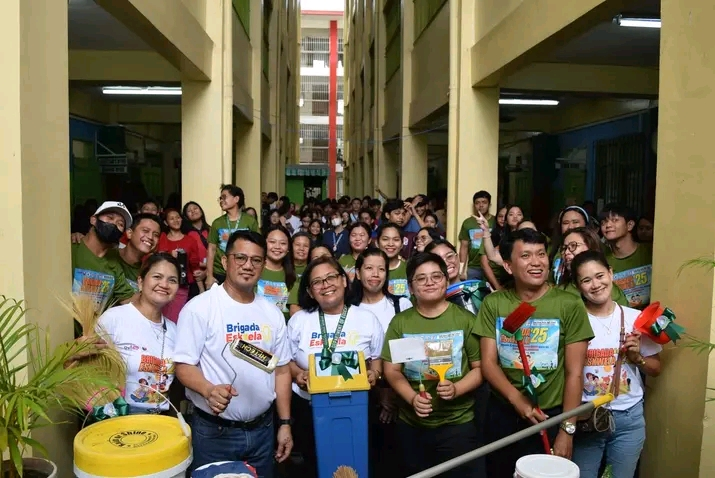
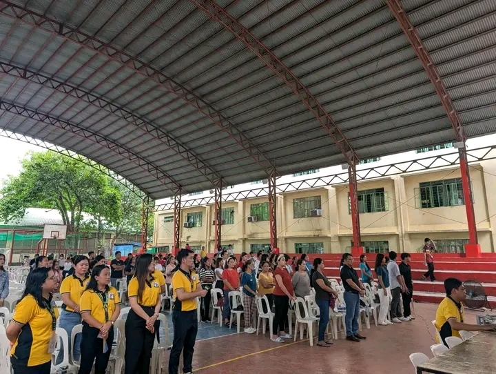
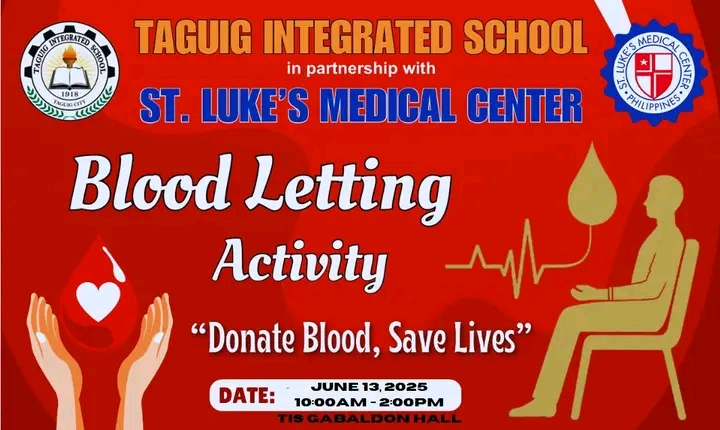
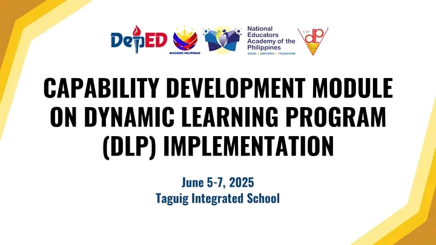

|  |  |  | |
|---|---|---|---|
| The Brigada Eskwela 2025 officially commenced with a successful Kick-Off Program attended by students, parents, and various stakeholders. The strong collaboration and support demonstrated during the opening event reflect | All out support for our champions!Go Taguig City and Pateros Delegates—show the nation your heart, grit,and pride!We believe in you! | On this special day, we, your students, teachers, and staff, would like to extend our heartfelt greetings and gratitude for your unwavering dedication, inspiring leadership, and genuine care for our school community. May this year bring you abundant blessings, good health, and continued success. We are truly grateful for the guidance and wisdom you share with us every day. Enjoy your special day, Sir! Happy Natal Day to our School Principal Mr. Jennefer R. Mariano |
|  |  |  | |
|---|---|---|---|
| Congratulations on the successful HRPTA & SPTA Election and the 1st General Assembly of the school year! Thank you to all parents and guardians, who showed their full support and active participation. We proudly welcome our new set of SPTA Officers, headed by our newly elected SPTA President, Mrs. Marivic Aristain. Your leadership marks a new chapter of unity and commitment in strengthening our school-home partnership. | BLOOD LETTING ACTIVITY – BRIGADA ESKWELA 2025 June 13, 2025 Gabaldon Hall 10:00am-2:00pm In the spirit of Bayanihan and community care, we invite you to donate blood and save lives as part of our Brigada Eskwela 2025! Join us in this meaningful cause and become a hero not just for our school, but for those in need of life-saving blood. Healthy donors aged 16 and above (with parental consent for minors) No fasting needed – just bring a kind heart and valid ID! | *Empowering Educators for the Future!* Taguig Integrated School, one of the pilot schools in the National Capital Region, successfully concluded its Capability Development Module on Dynamic Learning Program (DLP) Implementation Seminar from June 5 to June 7, 2025. This intensive three-day seminar brought together dedicated educators who are committed to transforming classroom instruction through a learner-centered DLP approach. |